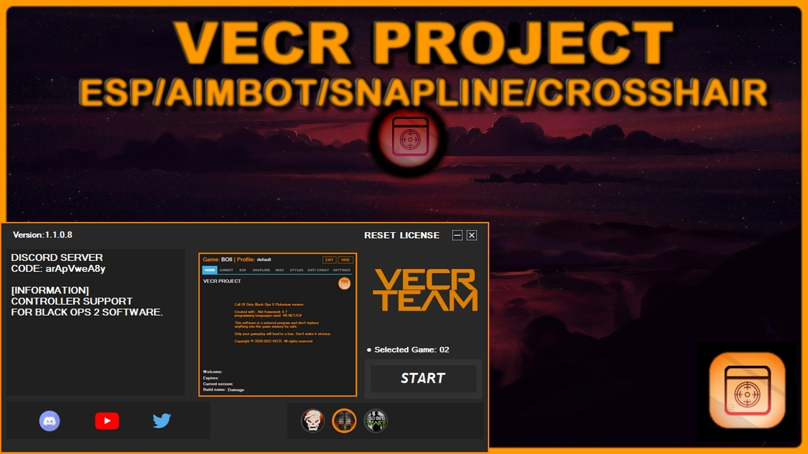
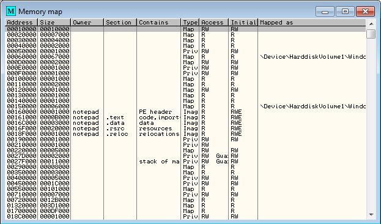
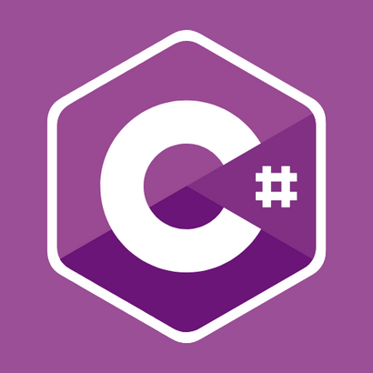

PRESENTATION

Ce logiciel a pour but de tricher sur un jeu à
la
première
personne.
Il permet de visualiser des ennemis à travers
les
murs et de faire pas mal de modification à l'écran
que se soit l'interface visuel ou le jeu en lui même afin de rendre l'ergonomie et
l'utilisation
du logiciel le plus complet possible.
Le logiciel vas dessiner un carrer sur chaque
ennemis détecter à l'écran bien évidemment cette fonction va prendre en concidération
plusieurs
conditions:
- Savoir si l'ennemi est vivant ou non
- Comparer les camps des joueurs pour
différencier
les couleurs à l'écran afin de connaitre véritablement qui est L'alliés/l'ennemis
- Connaitre le nombre de joueurs dans la
partie
- Connaitre qui est vivant ou mort dans la
partie
Le programme utilise la mémoire du jeu afin de
lire
chaque détails qu'on veut voir à l'écran.
Grâce à cela nous pouvons donner
des directives au jeu comme l'on souhaite.
LES LOGICIELS UTILISES
CHEAT ENGINE
Cheat Engine peut visualiser la mémoire
désassemblée d'un processus et permettre l'ajout et/ou la modification d'états de jeu pour
donner à l'utilisateur des avantages tels que de la santé, du temps ou des munitions
infinies.

VISUAL STUDIO
Visual Studio est un
ensemble
complet d'outils de
développement permettant de générer des applications web ASP.NET, des services web XML, des
applications bureautiques et des applications mobiles. Visual Basic, Visual C++, Visual C#
utilisent tous le même environnement de développement intégré (IDE), qui leur permet de
partager
des outils et facilite la création de solutions faisant appel à plusieurs langages.
LES LANGUES UTILISES

ASSEMBLEUR
le langage de plus bas niveau qui représente
le
langage machine sous une forme lisible par un humain. Les combinaisons de bits du langage
machine sont représentées par des symboles dits « mnémoniques », c'est-à-dire faciles à
retenir.
Le programme assembleur convertit ces mnémoniques en langage machine, ainsi que les valeurs
(écrites en décimal) en binaire et les libellés d'emplacements en adresses, en vue de créer
par
exemple un fichier objet ou un fichier exécutable.

VB.NET
VB.NET permet de
développer
en .NET via Visual Studio, sur les systèmes d'exploitation Windows (98, 2000, XP, Vista, 7,
8,
8.1 et 10). Comme tout autre langage de la plateforme .NET, VB.NET est compilé vers le
langage
intermédiaire CIL.

C#
C# est un langage de programmation orientée
objet,
fortement typé, dérivé de C et de C++, ressemblant au langage Java3. Il est utilisé pour
développer des applications web, ainsi que des applications de bureau, des services web, des
commandes, des widgets ou des bibliothèques de classes3. En C#, une application est un lot
de
classes où une des classes comporte une méthode Main, comme cela se fait en Java3.
Objectif personnel
C# est un langage de programmation orientée
objet,
fortement typé, dérivé de C et de C++, ressemblant au langage Java3. Il est utilisé pour
développer des applications web, ainsi que des applications de bureau, des services web, des
commandes, des widgets ou des bibliothèques de classes3. En C#, une application est un lot
de
classes où une des classes comporte une méthode Main, comme cela se fait en Java3.